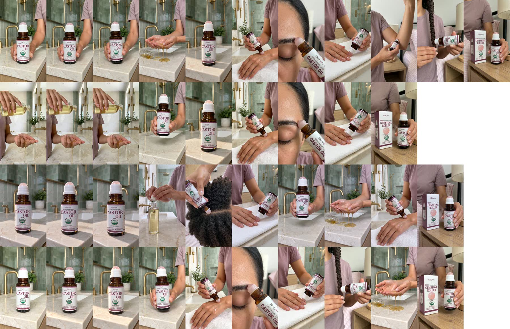

Grace's four scripts with your cuts, in your order 2, 1, 4, 3. Voice: the ElevenLabs "Grace" voice, paced to 3.3–3.5 words a second like the winner. All footage is the winner's own clips, so it looks like the winner, but each video has its own shot order, framing and bright grade.
More cleanup tries on 1 didn't make it drier: all 4 kept every word, but none beat the uncleaned voice on the echo meter. The likely cause is the speed-up: to fit 15 s, 1, 2 and 4 were sped up 9–16% with a smoothing setting, and 3 was slowed down. Below are free fixes on video 1. Pick the one that sounds like 3 and I'll apply it to 2 and 4.
If none sound right: a new ElevenLabs take of 1, 2 and 4 with the voice's own speed at 1.12, so there's no stretching at all: 814 characters, about $0.14. Only on your OK.
“Castor oil is liquid gold, but why is it SO messy to use? This roll-on is freaking genius! No pouring, no oily fingers. Use it to condition your brows, soften cuticles, moisturize dry skin, or add shine to your hair. I linked it in the orange cart. You’re welcome!”
Opens on the roll-on in hand. Daylight grade.
“The ONLY thing I hate about castor oil is how thick and messy it is! But castor oil is liquid gold, so this roll-on is freaking genius! No pouring, just targeted application for your brows, hair, cuticles and dry skin. Imma do y’all a favor and link it in the orange cart!”
The control: winner's hook and its opening pour. Clean neutral grade, slight zoom. listen the last word: the speech check hears "card".
“Let’s be real, castor oil doesn’t smell like your favorite perfume. But grandmama knew what she was doing with this liquid gold for her hair, skin and nails. When I saw they made it into a roll-on, I had to get it. No pouring, no oily fingers, just roll it where you need it. I linked this one in the orange cart. You’re welcome!”
Under your 20 s cap. Opens on the bottle alone. Bright cool grade.
“If you keep castor oil around, you need to see this! It’s USDA organic, cold-pressed and hexane-free, and the roll-on makes application so much easier. Brows, dry cuticles, rough skin, hair ends, without the usual oily mess. Imma do y’all a favor and link it in the orange cart!”
Fastest list (4 uses in 3 s). Bright punchy grade, closest zoom.
One row per video (1 to 4): frames at 0, 0.5 and 1 s, then one frame from each later shot.
